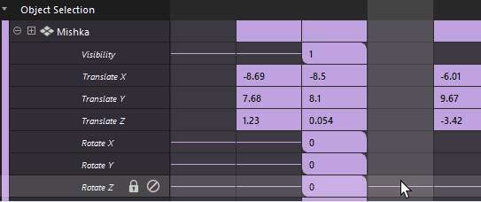
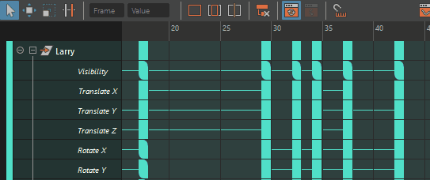
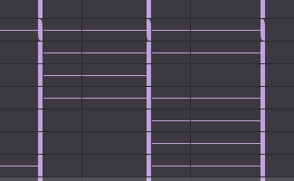
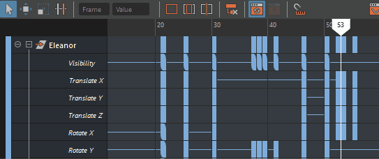
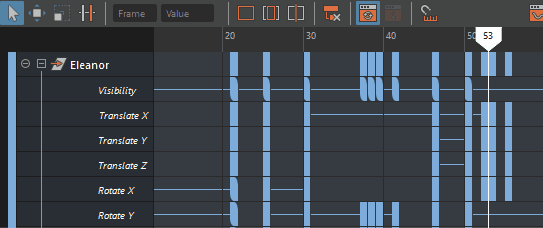
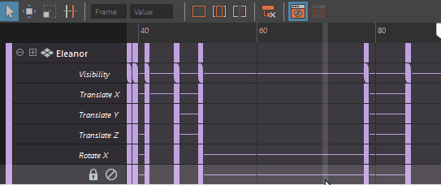

在摄影表编辑器(Dope Sheet Editor)中编辑关键帧组，以复制、剪切、粘贴、缩放、移动或禁用一定范围的时间和关键帧。
- 选择关键帧
- 按 Q 键或使用“摄影表”(Dope Sheet)工具栏上的“选择工具”(Select Tool)
 以在视图区域中选择一个关键帧。按住 Shift 键并单击可将非连续关键帧添加到选择中，拖动可选择一组关键帧。
以在视图区域中选择一个关键帧。按住 Shift 键并单击可将非连续关键帧添加到选择中，拖动可选择一组关键帧。

- 编辑关键帧值
- 在视图区域中双击关键帧以输入新值。

-
使用相同值更新多个关键帧值
- 按住 Shift 键并选择多个“摄影表编辑器”(Dope Sheet Editor)关键帧。
- 在按住 Shift 键的同时，双击其中一个选定关键帧并输入值以同时更改所有关键帧。

- 移动关键帧选择
- 选择一个或多个关键帧后，使用鼠标中键向左或向右拖动以重新定位关键帧。当鼠标位于关键帧上时，拖动可移动选定关键帧；当鼠标不在关键帧上时，使用鼠标中键拖动可移动选定关键帧。

- 如果要确保强制关键帧仅捕捉到整帧，请单击“摄影表”(Dope Sheet)工具栏上的“时间捕捉”(Time Snap)
 。
。
- 也可以按 W 键或单击“摄影表”(Dope Sheet)工具栏上的“移动工具”(Move Tool)
 。
。
- 双击“移动工具”(Move Tool)图标 以打开“移动关键帧设置”(Move Key Settings)，在其中可以选择关键帧在移动时的行为：
选项 行为 仅移动(Move Only) 阻止关键帧扫过其他关键帧。 移过(Move Over) 用于使选定关键帧扫过其他关键帧。该设置为默认设置。 涟漪(Ripple) 按相同的量将关键帧推动到选择内容之后，使关键帧进行调整以保持同步。 
- 缩放关键帧
- 按 R 键或单击“摄影表”(Dope Sheet)工具栏上的“缩放工具”(Scale Tool)图标
 ，然后拖动一组关键帧以选择它们。关键帧周围会有一个白色缩放框，可用于拉伸或收缩选择内容。
双击“缩放工具”(Scale Tool)图标 以打开缩放关键帧工具设置(Scale Keys Tool settings)，设置如何移动关键帧：
有关详细信息，请参见缩放关键帧选项(Scale Keys options)。
，然后拖动一组关键帧以选择它们。关键帧周围会有一个白色缩放框，可用于拉伸或收缩选择内容。
双击“缩放工具”(Scale Tool)图标 以打开缩放关键帧工具设置(Scale Keys Tool settings)，设置如何移动关键帧：
有关详细信息，请参见缩放关键帧选项(Scale Keys options)。选项 行为 操纵器(Manipulator) 使用操纵器框缩放选定关键帧。拖动并选择关键帧，然后拖动操纵器框的一角。

光标为中心(Gestural) 使用鼠标位置来缩放选定关键帧。单击鼠标中键并拖动双箭头
 光标。
光标。

- 复制关键帧
- 选择一个或多个关键帧，然后按 Ctrl+C 以复制关键帧。然后，将当前时间标记定位到要显示关键帧的位置，并按 Ctrl+V 进行粘贴。

- 也可以使用“摄影表”(Dope Sheet)的“编辑”(Edit)菜单或“摄影表”(Dope Sheet)视图区域上下文菜单中的“复制”(Copy)和“粘贴”(Paste)选项。选择“编辑 > 复制”(Edit > Copy) >
 或“编辑 > 粘贴”(Edit > Paste) > 以打开复制关键帧选项(Copy Keys Options)或粘贴关键帧选项(Paste Keys Options)。
或“编辑 > 粘贴”(Edit > Paste) > 以打开复制关键帧选项(Copy Keys Options)或粘贴关键帧选项(Paste Keys Options)。
- 粘贴的关键帧将粘贴到具有选定关键帧的行上。如果未选择关键帧，则关键帧将粘贴到原始通道中。
-
注： “摄影表”(Dope Sheet)的复制关键帧选项(Copy Keys Options)和粘贴关键帧选项(Paste Keys Options)使用与曲线图编辑器(Graph Editor)相同的选项。
- 剪切关键帧
- 选择一个或多个关键帧，然后按 Ctrl+X 以剪切关键帧。然后，将当前时间标记定位到要显示关键帧的位置，并按 Ctrl+V 进行粘贴。

- 也可以使用“摄影表”(Dope Sheet)的“编辑”(Edit)菜单或“摄影表”(Dope Sheet)视图区域上下文菜单中的“剪切”(Cut)和“粘贴”(Paste)选项。选择“编辑 > 剪切”(Edit > Cut) > 或“编辑 > 粘贴”(Edit > Paste) > 以打开剪切关键帧选项(Cut Keys Options)或粘贴关键帧选项(Paste Keys Options)。摄影表粘贴的关键帧将粘贴到具有选定关键帧的行上。如果未选择关键帧，则关键帧将粘贴到原始通道中。
-
注： “摄影表”(Dope Sheet)的剪切关键帧选项(Cut Keys Options)和粘贴关键帧选项(Paste Keys Options)使用与曲线图编辑器(Graph Editor)相同的选项。
- 禁用关键帧或通道
- 可以禁用动画关键帧或通道，以暂时“关闭”相应关键帧或通道的效果。通过禁用关键帧或通道，您可以将注意力集中在动画的另一部分，或隔离动画以对其进行微调。有时，通过使用“禁用”(Mute)，可以将不必要的动画从播放中排除，从而提高性能。
- 禁用通道在“摄影表”(Dope Sheet)视图区域中显示为带条纹。
选项 行为 禁用通道 单击“摄影表”(Dope Sheet)大纲视图中通道旁边的“禁用”(Mute)图标  ，以禁用相应通道对场景所具有的任何效果。
，以禁用相应通道对场景所具有的任何效果。
请参见禁用通道。
禁用关键帧 在关键帧上单击鼠标右键，然后选择“关键帧 > 禁用关键帧”(Keys > Mute Key)，以阻止关键帧影响通道上的动画。 请参见禁用关键帧。
- 锁定通道
- 还可以锁定通道以阻止对其进行编辑。与禁用不同，通道仍是动画的一部分，但不可编辑。单击相应通道旁边的“锁定”(Lock)图标
 以将其锁定。
以将其锁定。

- 锁定通道将灰显。
注： 不能锁定单个关键帧。
使用“摄影表”(Dope Sheet)的“选择关键帧”(Select Keys)操纵器编辑关键帧
本节介绍了如何使用“编辑 > 变换工具 > 选择关键帧”(Edit > Transformation Tools > Select Keys)  修改关键帧组。可以使用“摄影表”(Dope Sheet)工具栏上的图标执行相同的操作。
修改关键帧组。可以使用“摄影表”(Dope Sheet)工具栏上的图标执行相同的操作。
修改关键帧组。可以使用“摄影表”(Dope Sheet)工具栏上的图标执行相同的操作。
- “变换工具 > 选择关键帧”(Transformation Tools > Select Keys)操纵器与工具栏图标之间的差异
-
使用“选择”(Select)图标和“选择关键帧”(Select Keys)操纵器移动关键帧
-
- 与“摄影表”(Dope Sheet)工具栏中的“选择工具”(Select Tool) 不同，“编辑 > 变换工具 > 选择关键帧”(Edit > Transformation Tools > Select Keys)操纵器在操纵器上显示精确的帧编号。
- 将(Edit > Cut)和(Edit > Paste)摄影表与“摄影表”(Dope Sheet)的“选择关键帧”(Select Keys)操纵器一起使用时，其选项会影响由操纵器选定的时间和关键帧在动画中移除和插入的方式。
- 将“复制”(Copy) (Ctrl+C)、“剪切”(Cut) (Ctrl+X) 和“粘贴”(Paste) (Ctrl+V) 热键与“摄影表”(Dope Sheet)的“选择关键帧”(Select Keys)操纵器一起使用时，它们不使用在相应的“摄影表”(Dope Sheet)菜单选项窗口中设置的相同选项。相反，这些热键会偏移动画，以适应时间和关键帧的移除或插入。
- “摄影表”(Dope Sheet)的“选择关键帧”(Select Keys)操纵器不支持键盘上的 Delete 键。若要选择要删除的关键帧，请使用“摄影表”(Dope Sheet)工具栏或“编辑 > 变换工具”(Edit > Transformation Tools)菜单中的“选择工具”(Select Tool) 。
- 与“摄影表”(Dope Sheet)工具栏中的“选择工具”(Select Tool)
使用“摄影表 > 变换工具 > 选择关键帧”(Dope Sheet > Transformation Tools > Select keys)操纵器
- 选择(Windows > Animation Editors > Dope Sheet)。摄影表编辑器(Dope Sheet Editor)将打开。
- 在“视口”(Viewport)或“大纲视图”(Outliner)中选择要修改的对象。
选定对象及其关键帧将显示在“摄影表”(Dope Sheet)中。
- 在“摄影表编辑器”(Dope Sheet Editor)中，单击“编辑 > 变换工具 > 选择关键帧”(Edit > Transformation Tools > Select Keys) ()。
- 在“摄影表”(Dope Sheet)视图区域中，围绕要操纵的关键帧拖动一个区域。
“摄影表”(Dope Sheet)的“选择关键帧”(Select keys)操纵器将显示在选定区域周围。
注： “摄影表”(Dope Sheet)的“选择关键帧”(Select keys)操纵器显示为虚线轮廓，每一侧和每个角上都有一个点。帧编号显示在两侧，以指示您在动画中的位置。可以使用这些点来控制操纵器，光标将变为加号 (+)，指明可以调整选择区域的大小。 - 若要使用“摄影表”(Dope Sheet)操纵器来操纵时间和关键帧的选定区域，请执行下列操作：
- 修改关键帧选择
- 若要展开选择，请拖动选定区域的顶部、底部或两侧上的点。
- 移动关键帧选择
- 按住 Shift 键并将选定区域中心的点拖动到新位置。
- 复制并粘贴关键帧选择
- 将操纵器拖动到要粘贴所复制关键帧的位置，然后按 Ctrl+C。按 Ctrl+V，选择内容将粘贴到操纵器的左边。
重要： 如果插入点处有关键帧，它们将向前移动，以便插入复制的关键帧范围。
- 剪切关键帧选择
- 若要剪切选择内容并在视图区域中移动它，请按 Ctrl+X 以剪切操纵器定义的关键帧，然后使用中心点将其拖动到要粘贴关键帧的位置。按 Ctrl+V，选择内容将粘贴到“选择关键帧”(Select keys)操纵器的左边。
重要： 如果插入点处有关键帧，它们将向前移动，以便插入剪切的关键帧范围。
- 缩放关键帧选择
- 按住 Shift 键并拖动选择操纵器的右边。